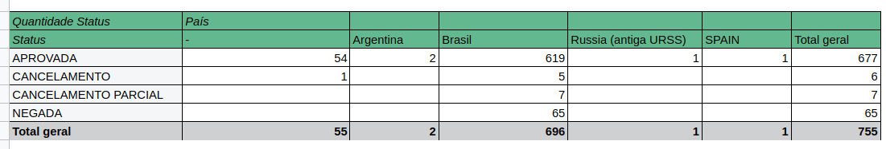

Case Stone
A partir de agora você é um analista do nosso time de Monitoramento e Prevenção! Está preparado?
Você está analisando um dos nossos clientes, S.A ACADEMIA, foi credenciado pelo canal POLO em 05-07- 2017.
O mesmo apresenta um ticket médio baixo. Dado que todas as transações são realizadas na modalidade de
cartão presente (no terminal), o estabelecimento possui serviço de antecipação de 100% automática e diária.
Segue um amostral do estabelecimento comercial.
Seguindo planilhas e PDF enviados por email
Planilha enviada unificada Spreadsheets
PDF usado PDF
2. A situação descrita representa uma exposição financeira da qual devemos nos resguardar? O bloqueio automático deve ser mantido?
A situação descrita representa uma exposição financeira em potencial para a empresa, uma vez que a antecipação automática que a Academia recebesse pagamentos por transações fraudulentas ou contestadas.
- - Se o bloqueio automático estiver impedindo transações fraudulentas, deve ser mantido;
- - Mas se o bloqueio automático estiver impedindo transações legítimas, deve ser retirado;
- - Possível comprometimento de transações, Chip e Senha;
- - Recomenda-se ver se a empresa não se tornará uma fraudadora;
- - Recomenda-se reavaliar a eficácia do bloqueio automático sem causar problemas desnecessários para os clientes legítimos;
- - Criar alerta para uma possível transação suspeita da Academia;
- - Analisar manualmente esses alertas da empresa antes de pagar a mesma;
Somente Chip e Senha; *Todas Aprovadas; *Somente CreditCard;
